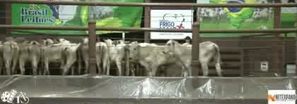
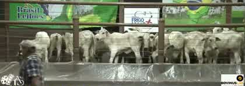
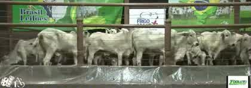
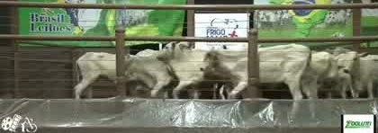

Mais barato /@Mais pertoMais recenteMais cabeças
Mostrando 15 de 15#FotoLoteR$/cabR$/@ est.MargemVídeo
1º
3 bezerras · 12 meses
Uruaçu · WM Leilões · 55 km · qua 28/10
R$ 1.920~210 kg · R$ 9,14/kg
R$ 274/@37% abaixo
R$ 3.551até 15@
2º
1 bezerra · 8 meses
Niquelândia · JPS Leilões · 73 km · ter 03/11 · 1 cabeça
R$ 1.690~180 kg · R$ 9,39/kg
R$ 282/@36% abaixo
R$ 3.781até 15@
3º
2 bezerras · 12 meses
Uruaçu · WM Leilões · 55 km · qua 28/10
R$ 2.240~210 kg · R$ 10,67/kg
R$ 320/@27% abaixo
R$ 3.231até 15@
4º
7 novilhas · 15 meses
Uruaçu · WM Leilões · 55 km · qua 04/11
R$ 2.650~240 kg · R$ 11,04/kg
R$ 331/@24% abaixo
R$ 2.821até 15@
5º
2 bezerras · 12 meses
Uruaçu · WM Leilões · 55 km · qua 28/10
R$ 2.320~210 kg · R$ 11,05/kg
R$ 331/@24% abaixo
R$ 3.151até 15@
6º
7 bezerras · 12 meses
Uruaçu · WM Leilões · 55 km · qua 28/10
R$ 2.330~210 kg · R$ 11,10/kg
R$ 333/@24% abaixo
R$ 3.141até 15@
7º
6 novilhas · 14 meses
Uruaçu · WM Leilões · 55 km · qua 28/10
R$ 2.610~230 kg · R$ 11,35/kg
R$ 340/@22% abaixo
R$ 2.861até 15@
8º
1 bezerra · 11 meses
Niquelândia · JPS Leilões · 73 km · ter 03/11 · 1 cabeça
R$ 2.320~202 kg · R$ 11,49/kg
R$ 345/@21% abaixo
R$ 3.151até 15@
9º
7 bezerras · 12 meses
Niquelândia · JPS Leilões · 73 km · ter 03/11
R$ 2.415~210 kg · R$ 11,50/kg
R$ 345/@21% abaixo
R$ 3.056até 15@
10º
10 bezerras · 10 meses
Porangatu · Brasil Leilões · 172 km · seg 26/10
R$ 2.480~195 kg · R$ 12,72/kg
R$ 382/@13% abaixo
R$ 2.991até 15@
11º

100% brancas81 bezerras · 12 meses
Porangatu · Brasil Leilões · 172 km · seg 26/10
R$ 2.800~210 kg · R$ 13,33/kg
R$ 400/@9% abaixo
R$ 2.671até 15@
12º
100% brancas
30 bezerras · 12 meses
Porangatu · Brasil Leilões · 172 km · seg 26/10
R$ 2.850~210 kg · R$ 13,57/kg
R$ 407/@7% abaixo
R$ 2.621até 15@
13º

100% brancas100 bezerras · 12 meses
Porangatu · Brasil Leilões · 172 km · seg 26/10
R$ 3.150~210 kg · R$ 15,00/kg
R$ 450/@3% acima
R$ 2.321até 15@
14º

100% brancas50 bezerras · 12 meses
Porangatu · Brasil Leilões · 172 km · seg 26/10
R$ 3.400~210 kg · R$ 16,19/kg
R$ 486/@11% acima
R$ 2.071até 15@
15º

100% brancas39 bezerras · 10 meses
Porangatu · Brasil Leilões · 172 km · seg 26/10
R$ 4.000~195 kg · R$ 20,51/kg
R$ 615/@41% acima
R$ 1.471até 15@
Preço = último lance na tela. Peso estimado pela era. Margem = 15@ × R$ 364,71 (Datagro novilha GO, 04/11) menos o preço, sem recria, frete e comissão.